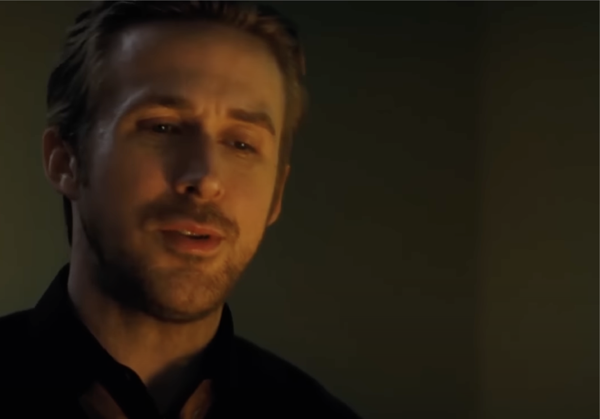

The Shots
Once Mia and Sebastian get together, almost every scene with them is shot to include both of them in the shot, whether over the shoulder or just the two of them next to each other. But then at the dinner table during their fight, it switches to direct shots. Just a subtle way to paint their separation.
This movie is literally a jazz song. In the film, there is one scene where Seb is describing jazz to Mia, and how even though it can be the same song it is never played the same way twice. At different times the drummer or saxophone player might go off and do their own thing and play the song their way. Throughout the film, there are times when they just focus on Mia or Seb and the decision they are making (see Seb playing piano in the restaurant or Mia's final audition). Then, in the final scene at the club, we see how their lives could have been different together if they made different decisions. But they always start at the restaurant and end at the club. So just like a jazz song can be played a little bit differently depending on how the musicians decide to play it, it still is the same song that starts and ends the same way, just like they meet at the restaurant and end at the club.
Earlier in the film, Mia says when talking about jazz: "I always thought it was something that people put on in the background when they talk to each other." Seb freaks out and says that's the antithesis of it, and that real jazz needs to be experienced live, that's what it's about. But later, when the pair of them are arguing for the first time and Seb’s in his sell-out band, what's playing in the background? A classic jazz record. Seb had forgotten his roots and what made Mia dig him in the first place.
Ending scene
- Sebastian explains the origin of Jazz as a form of communication between people who didn't speak the same language. After 5 years apart, Sebastian didn't have enough words (nor time) in the world to describe his complex feelings to Mia, so he expressed himself through Jazz, sort of a secret language (which he taught her) that only she could fully comprehend at that time.
- The 'alternate reality' sequence (which felt very much like the 'reality vs imagination' scene in 500 days of summer) was over the top Hollywood on purpose. Sebastian might be saying: "Mia, I wish our lives could unravel like the movies you're so in love with, but reality is much different, and that's ok. We'll always have what we had". It also felt like the director's love letter to old Hollywood. Both these elements echo back to the "I'll always love you" from the prior scene.